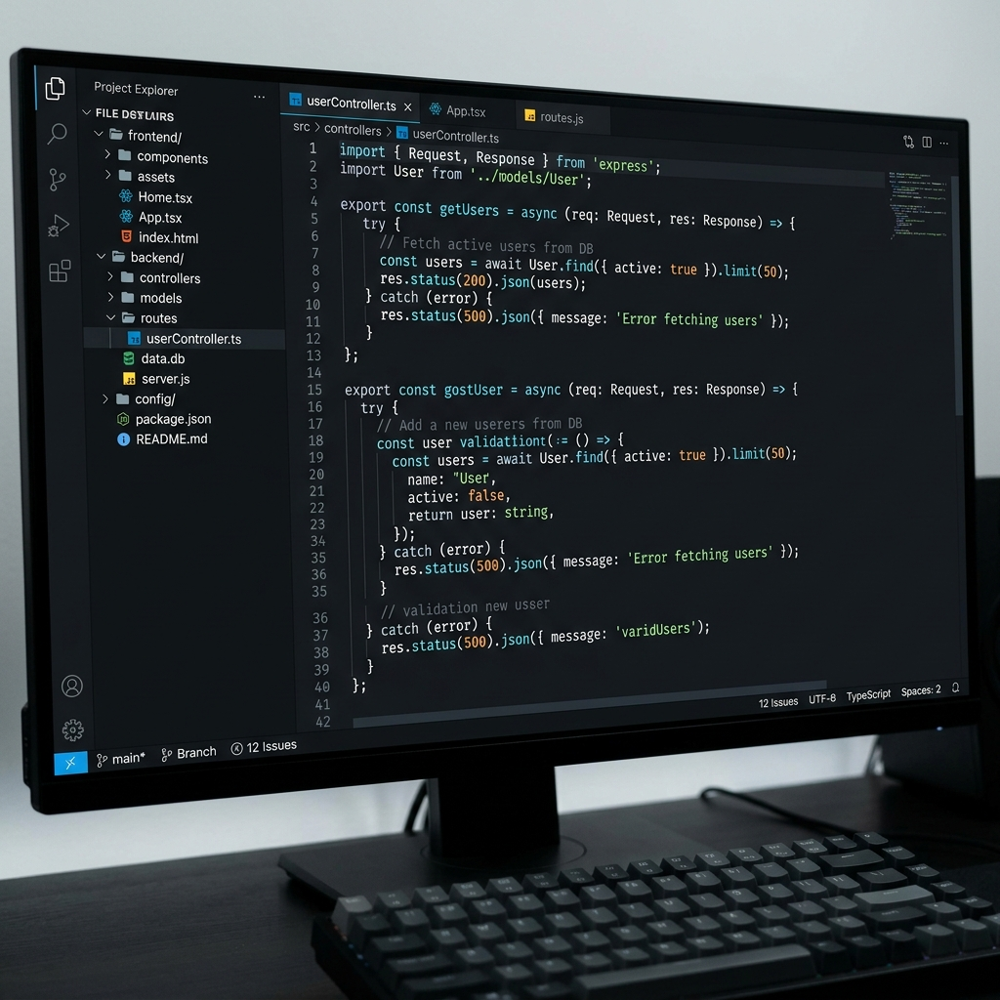
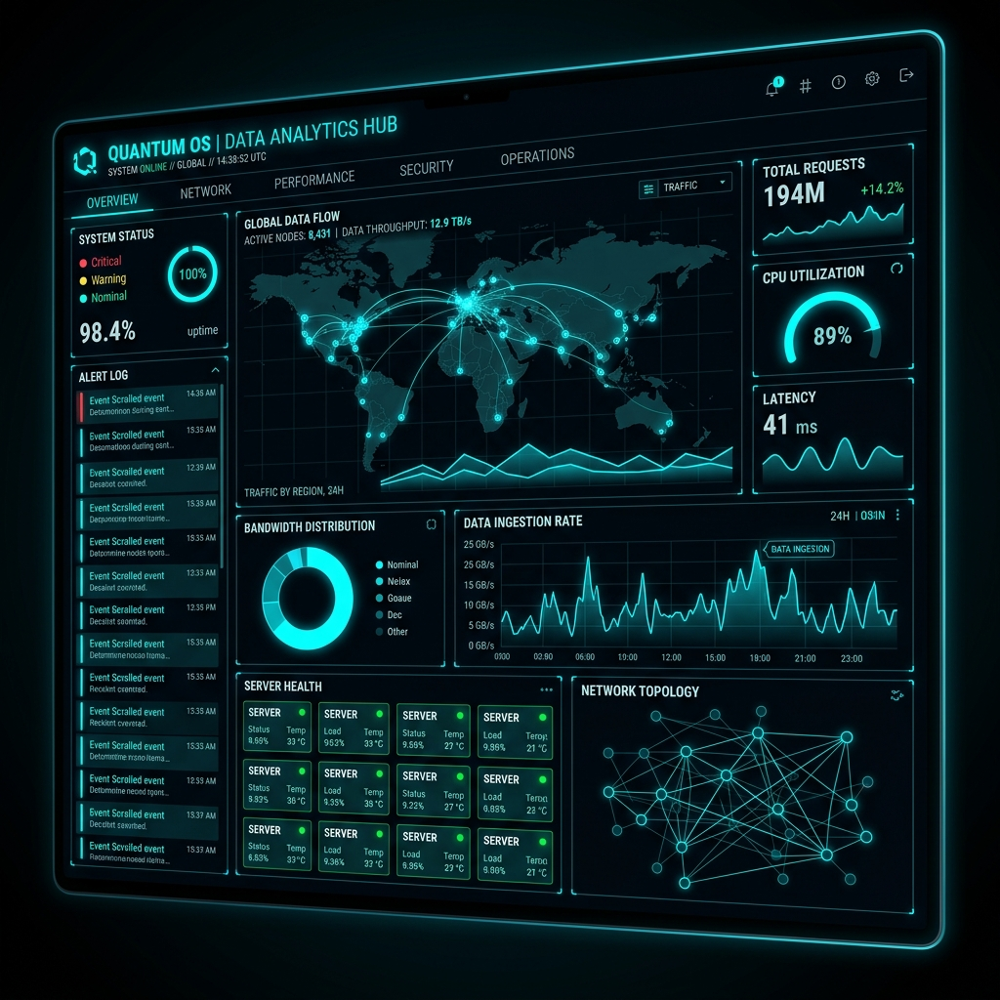

Core Operational Vectors
// HIGH-LEVEL STRUCTURAL OVERVIEW OF CAPABILITIES
01 / SOFTWARE_ENGINEERING
Custom Full-Stack Development
We architect massively scalable web applications, mobile interfaces, and headless backend APIs. Utilizing a mix of React, Node.js, Next.js, and Golang, we guarantee sub-second latency and absolute reliability.

02 / CYBERSEC
Security Infrastructure
Automated endpoint scanning, realtime vulnerability mapping, and strict zero-trust implementations.

03 / DATA_OPS
Telemetry Dashboards
Ingest terabytes of unstructured log data to build unified, actionable executive intelligence panels.
